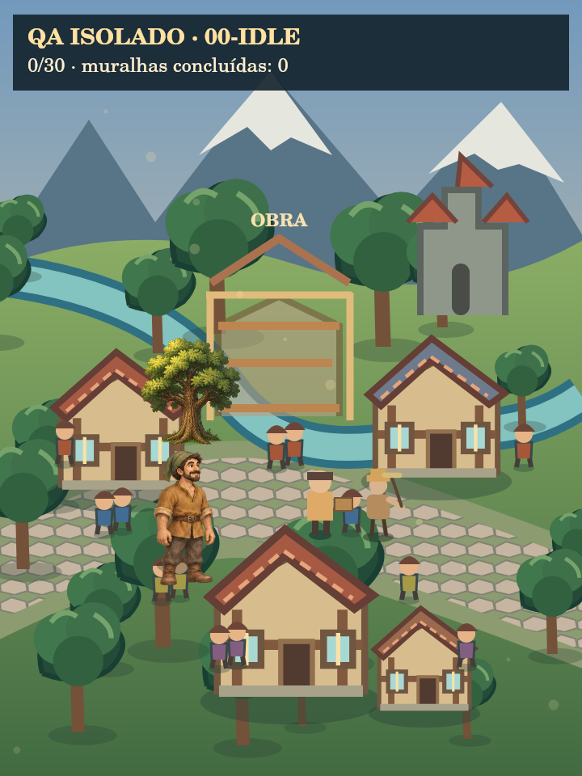
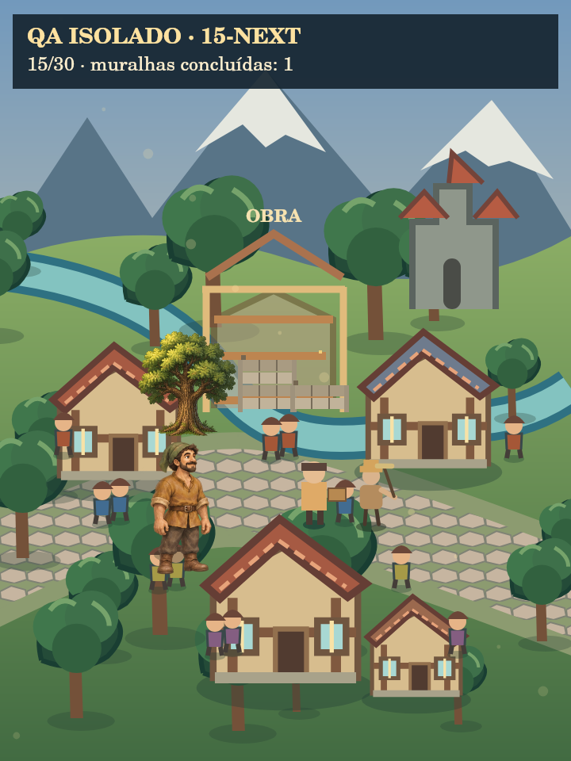

🏰 V21 · QA visual das muralhas
Sete capturas sintéticas reproduzíveis dos renderizadores do jogo. Esta página não executa a economia, não acessa nem modifica o salvamento do jogador e não substitui o teste da transição no jogo ao vivo.
Comparação lado a lado


Comparação de capturas sintéticas, não de uma sessão de jogo.
Fonte: docs/evidence/v21-wall-stages · PR #15. O teste de persistência é comparação pixel a pixel de fixtures, não recarregamento de uma sessão real.